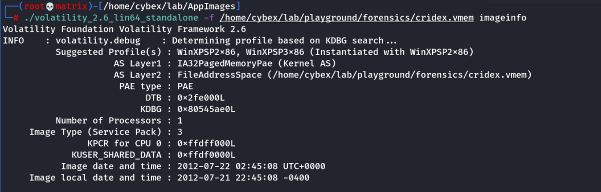
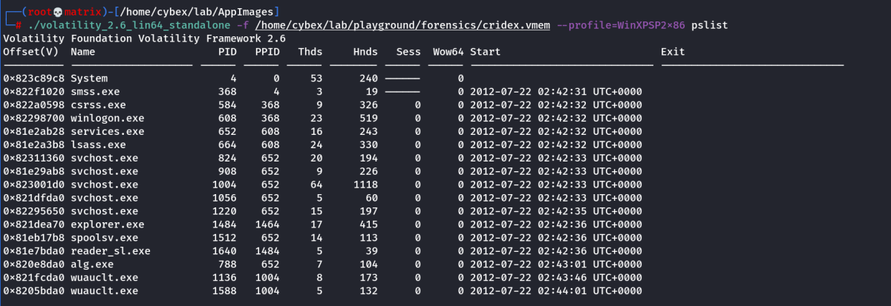
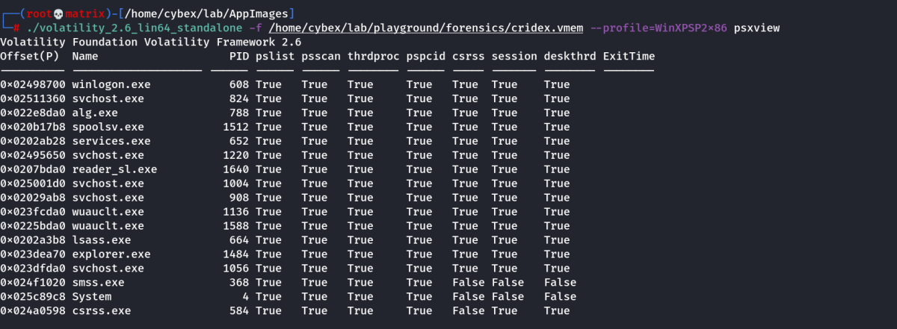
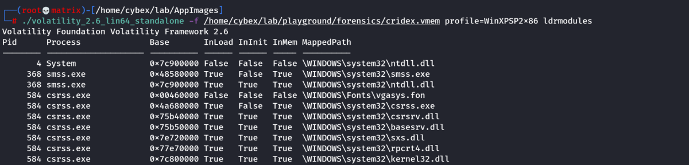
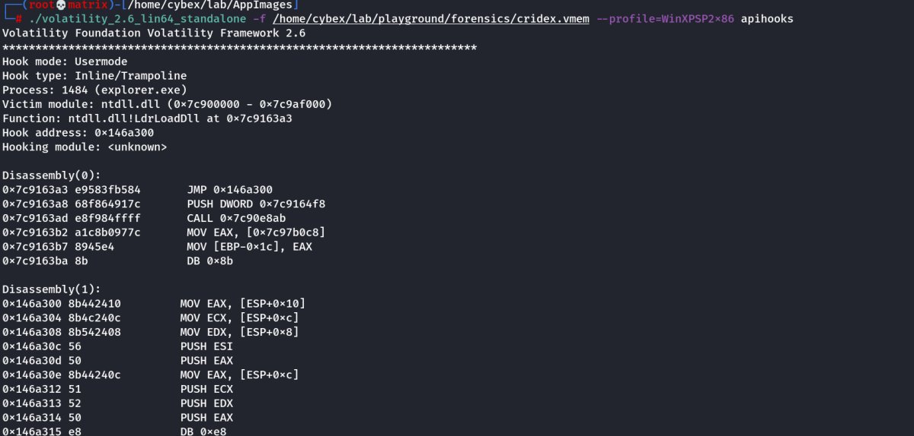
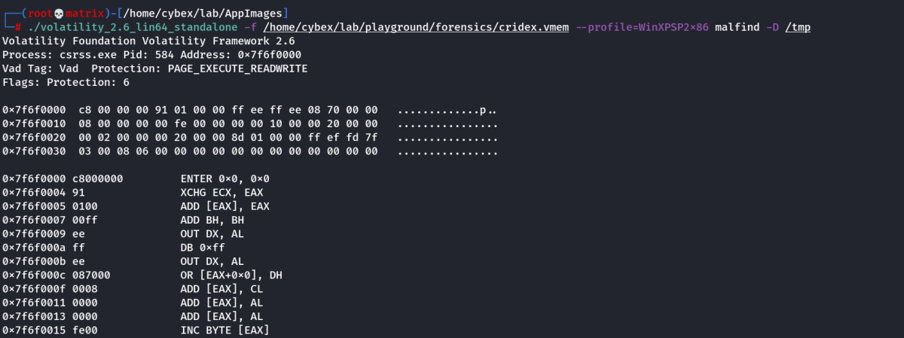
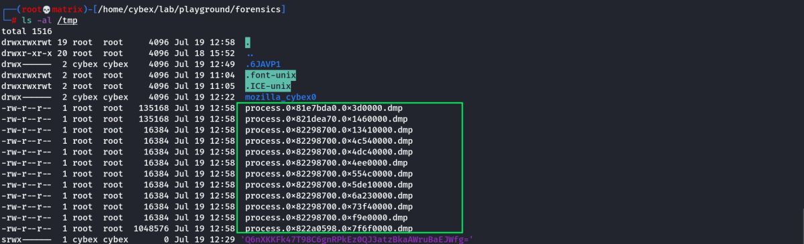
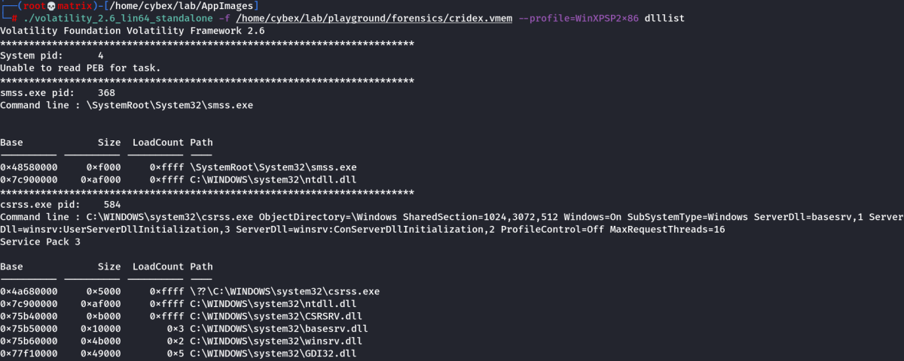

volatility (Memory)
Volatility
Volatility is a free memory forensics tool developed and maintained by Volatility labs. Regarded as the gold standard for memory forensics in incident response, Volatility is wildly expandable via a plugins system and is an invaluable tool for any Blue Team.
GitHub Link:
https://github.com/volatilityfoundationObtaining a memory capture from machines can be done in numerous ways, however, the easiest method will often vary depending on what you're working with. For example, live machines (turned on) can have their memory captured with one of the following tools:
• FTK Imager
• Redline
Note: Requires registration but Redline has a very nice GUI• DumpIt.exe
• win32dd.exe / win64dd.exe
Note: Has fantastic psexec support, great for IT departments if your EDR solution doesn't support thisLinks:FTK Imager:
https://accessdata.com/product-download/ftk-imager-version-4-2-0Redline:
https://www.fireeye.com/services/freeware/redline.htmlThese tools will typically output a .raw file which contains an image of the system memory. The .raw format is one of the most common memory file types you will see in the wild.
Offline machines, however, can have their memory pulled relatively easily as long as their drives aren't encrypted. For Windows systems, this can be done via pulling the following file:
%SystemDrive%/hiberfil.syshiberfil.sys: better known as the Windows hibernation file contains a compressed memory image from the previous boot. Microsoft Windows systems use this in order to provide faster boot-up times, however, we can use this file in our case for some memory forensics!
Things get even more exciting when we start to talk about
virtual machines and memory captures. Here's a quick sampling of the memory capture process/file containing a memory image for different virtual machine hypervisors:
VMware - .vmem file
Hyper-V - .bin file
Parallels - .mem file
VirtualBox - .sav file Note: This is only a partial memory file. You'll need to dump memory like a normal bare-metal system for this hypervisorThese files can often be found simply in the data store of the corresponding hypervisor and often can be simply copied without shutting the associated virtual machine off. This allows for virtually zero disturbance to the virtual machine, preserving it's forensic integrity.
Running Volatility: (I am using executible App Image:
https://www.volatilityfoundation.org/releases)
Command: volatility -f MEMORY_FILE.raw imageinfo
./volatility_2.6_lin64_standalone -f /home/cybex/lab/playground/forensics/cridex.vmem imageinfo
Running the imageinfo command in Volatility will provide us with a number of profiles we can test with, however, only one will be correct. We can test these profiles using the pslist command, validating our profile selection by the sheer number of returned results. Do this now with the following:
Note: Imageinfo also helps to guess about the Operating System.
Command: volatility -f MEMORY_FILE.raw --profile=PROFILE pslist
./volatility_2.6_lin64_standalone -f /home/cybex/lab/playground/forensics/cridex.vmem --profile=WinXPSP2x86 pslist
In addition to viewing active processes, we can also view active network connections at the time of image creation! Let's do this now with the following.
Command: volatility -f MEMORY_FILE.raw --profile=PROFILE netscan
It's fairly common for malware to attempt to hide itself and the process associated with it. That being aid, we can view intentionally hidden processes via the following:
Command: volatility -f MEMORY_FILE.raw --profile=PROFILE psxview
./volatility_2.6_lin64_standalone -f /home/cybex/lab/playground/forensics/cridex.vmem --profile=WinXPSP2x86 psxview
In addition to viewing hidden processes via
psxview, we can also check this with a greater focus via the command
'ldrmodules'. Three columns will appear here in the middle, InLoad, InInit, InMem. If any of these are false, that module has likely been injected which is a really bad thing. On a normal system the grep statement above should return no output.
Command: volatility -f MEMORY_FILE.raw --profile=PROFILE ldrmodules
./volatility_2.6_lin64_standalone -f /home/cybex/lab/playground/forensics/cridex.vmem --profile=WinXPSP2x86 ldrmodules
Processes aren't the only area we're concerned with when we're examining a machine. Using the
'apihooks' command we can view unexpected patches in the standard system DLLs. If we see an instance where Hooking module: <unknown> that's really bad. This command will take a while to run, however, it will show you all of the extraneous code introduced by the malware.
Command: volatility -f MEMORY_FILE.raw --profile=PROFILE apihooks
./volatility_2.6_lin64_standalone -f /home/cybex/lab/playground/forensics/cridex.vmem --profile=WinXPSP2x86 apihooks 
Injected code can be a huge issue and is highly indicative of very very bad things. We can check for this with the command `malfind`. Using the following command we can not only find this code, but also dump it to our specified directory.
Command: volatility -f MEMORY_FILE.raw --profile=PROFILE malfind -D <Destination Directory>
./volatility_2.6_lin64_standalone -f /home/cybex/lab/playground/forensics/cridex.vmem --profile=WinXPSP2x86 malfind -D /tmp
Directory Check:
Last but certainly not least we can view all of the DLLs loaded into memory. DLLs are shared system libraries utilized in system processes. These are commonly subjected to hijacking and other side-loading attacks, making them a key target for forensics.
Command: volatility -f MEMORY_FILE.raw --profile=PROFILE dlllist
./volatility_2.6_lin64_standalone -f /home/cybex/lab/playground/forensics/cridex.vmem --profile=WinXPSP2x86 dlllist
Note: Also to find the DLL list for a particular process, we can use the
-p option to pass the
PID argument.
Eg> volatility -f MEMORY_FILE.raw --profile=PROFILE -p PID dlllist
./volatility_2.6_lin64_standalone -f /home/cybex/lab/playground/forensics/cridex.vmem --profile=WinXPSP2x86 -p 584 dlllistNow that we've seen all of the DLLs running in memory, let's go a step further and pull them out! Do this now with the following command where the PID is the process ID of the infected process we identified earlier
Command: volatility -f MEMORY_FILE.raw --profile=PROFILE --pid=PID dlldump -D <Destination Directory>